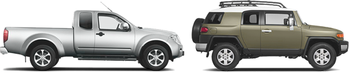

«Хозяйственный мужчина ищет
надежную красавицу для прогулок по
бездорожью. Полный привод
обязателен»

Яндекс.Авто за минуту
Простой способ выбрать автомобиль
КаталогСамый большой каталог
с описанием автомобилей
от современных — до 20 лет назад
ПоискВозможность искать
по большему числу параметров, чем где бы
то ни было
Выборки автомобилейВыборки автомобилей
в зависимости от ваших потребностей: «семейный»,
«для города», «для путешествий»
Простой языкВозможность описания характеристик простым
языком, понятным неискушенному пользователю